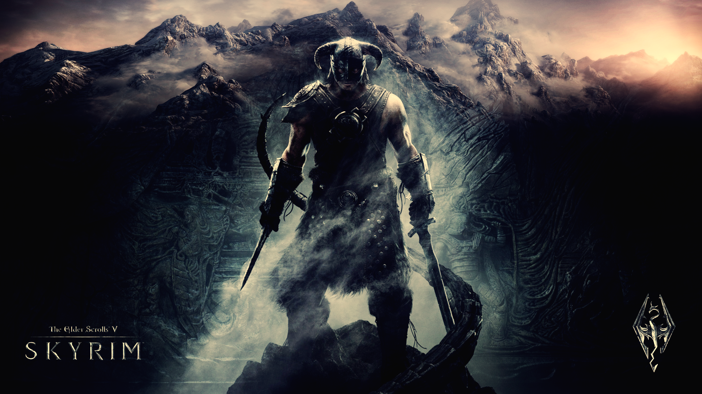

Skyrim, developed by Bethesda Game Studios and released in the year 2011, quickly became my favorite game as a child and still remains my favorite to this day. It is a fantasy MMORPG game where you can create a unique character and embark on a quest to defeat a dragon who has mysteriously returned. The game is open world with a massive map to explore which has brought me back to play it repeatedly even after finishing it many times.
